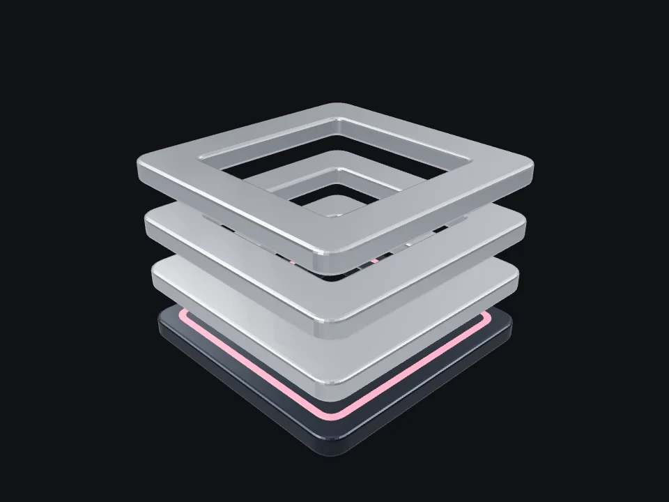
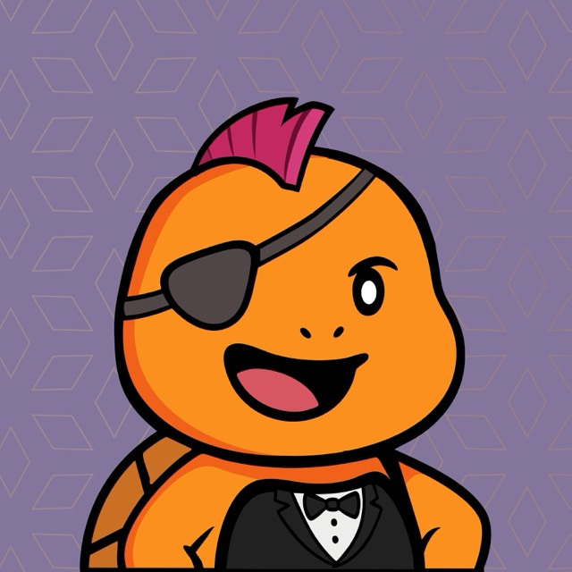

Product engineering / Selected practice
From interface
to infrastructure.
I build complete digital products.
My work connects design, systems, Web3, and AI.

Selected work / Lighthouse
One practice.
Different scales.
Scroll connects the chapters.
Each project has its own visual.
01 / BackupData
Backups across
different sources.
Source-specific flows.
Node.js, Go, and Python SDKs.
Contribution map / Concept
Closest to the current design. Replace control rows with integrated labels. Give each project one active visual.
Design / Development / Systems
Products with
depth.
Arpit Bindal
Interface design, full-stack systems,
Web3, and applied AI.
Selected work.
01 — 04
02 / Turby · Design and delivery ↗More image area and less vertical repetition. Hover or focus changes the project preview. Touch keeps a visible project link.
Arpit Bindal / Product engineer
Separate layers.
One complete system.
Chapter 02 / Systems
Build the
full path.
The object aligns as the work moves from interface to system ownership.
More emphasis on one connected scene. One short desktop pin, then normal page flow. Mobile uses a compact sequence.